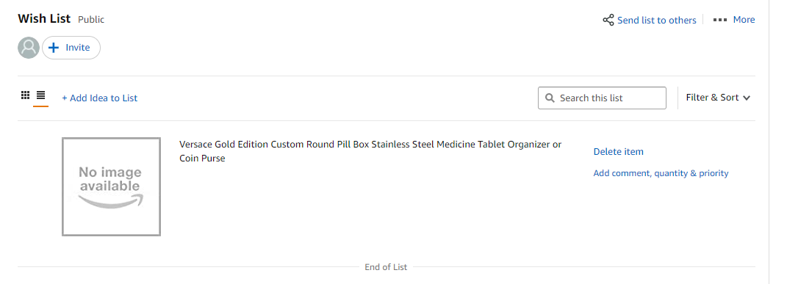

Here,it's my analysis for each heuristic.
In my opinion,for #1, it can help users know what they can do now cearly.For #2,users can understand system esaily, becasue system uses familiar elements from real world. For #3, it is like a guide to use system right.For #4，consistent words can let users have no confused about text to understand esaily. For #5, it helps users to avoid creating problems when they uses system, becasue it would use highlight button to remind users before they start. For #6, to reduce remembering useless informtion, user can work on system effectively.For #7, it can improve the efficiency for users and save thier time on the system. For #8, users can find their need in the system esaily,simple color couldn't make user confused and uncomfortable vision. For #9, to help users more understand system, so they couldn't make mistakes again. For #10,it would provide some reminders, which can help users with poor ability of website to use system well, .
I choose Amazon web to evaluate, here is my screenshots and comments for its interface desgin.
It reflects #1, there are a lot of detailed information and button, users can know what they can do on this web.
It relfects #2, simple and familiar language to introduce and choose.
It relfects #3, search box can help users find their goods freely.
It relfects #4, same front and size words to help users see them cearly.

It relfects #5, there are some highlight button to help users to do them for preventing error.
It relfects #6, to provide some choices and keywords, users couldn't remember a lot for reseaching some goods
It relfects #7,there are a lot of options so that it could save time that users find the function they want.
It relfects #8, simple color and layout, highlight important information, users can have great visual experience.
It relfects #9,it can hlep users recognize which parts they miss, espically, red is esay to see.
It relfects #10, to provide help box, user can get solutions esaily when they have troubles for system.